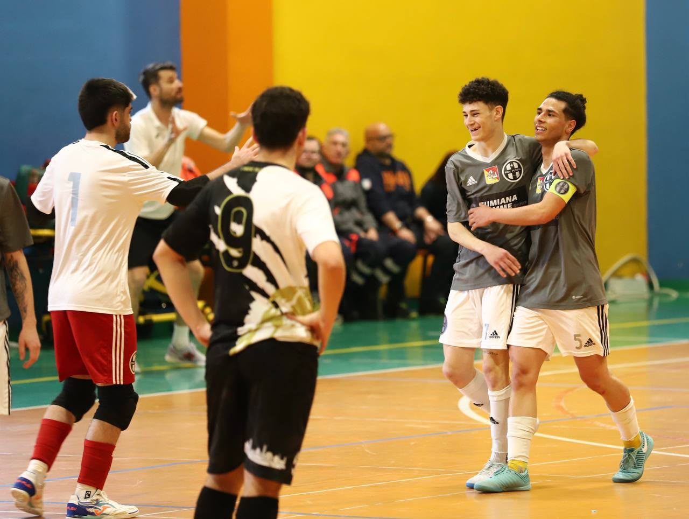

9
Pivot
Il Pivot di Riferimento
Scheda dimostrativa: il nome ufficiale del giocatore sarà pubblicato con l'annuncio della rosa 2026/2027.
 •
•
 •
•
 •
•

Scheda dimostrativa: il nome ufficiale del giocatore sarà pubblicato con l'annuncio della rosa 2026/2027.

Il ruolo
Nel sistema 1-2-1 di Real Fut5al il pivot è il punto fermo in attacco: sponde, protezione palla e gol pesanti. Una delle chiavi della vittoria in Deaf Champions League nel gennaio 2026.
Torna alla squadraCarriera al club
Si unisce al progetto Real Fut5al in costruzione verso i vertici nazionali.
Decisivo nel cammino che porta alla prima Deaf Champions League della storia del club.
Tra i protagonisti della corsa al primo titolo italiano della storia societaria.